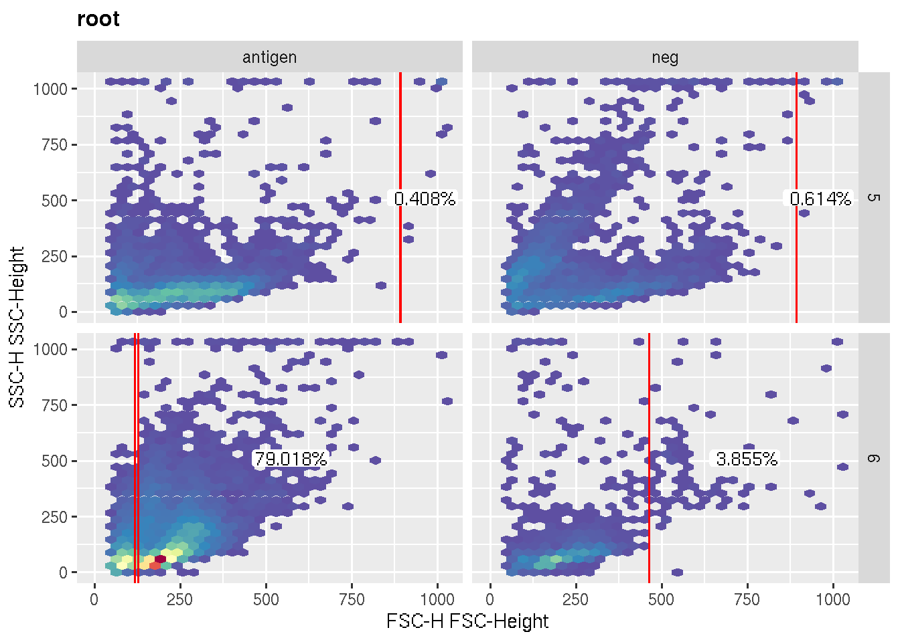
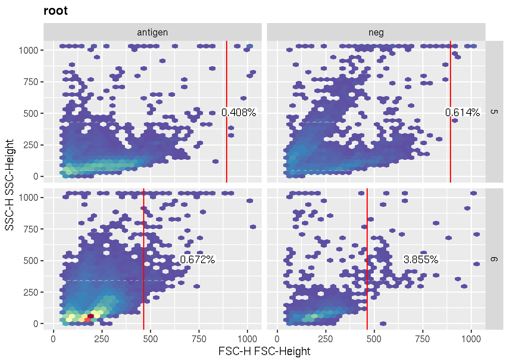

library(flowCore)
library(flowWorkspace)
library(openCyto)
data(GvHD)
gs <- GatingSet(GvHD)
#select subset for demo
gs <- subset(gs, Patient %in% c(5, 6) & Visit %in% c(1,2,3))
#append the stim col for demo purpose
pData(gs)[["stim"]] <- c("neg", "antigen", "antigen", "neg", "antigen", "antigen")
pData(gs)## Days Visit stim Grade Patient name
## s5a01 -6 1 neg 3 5 s5a01
## s5a02 0 2 antigen 3 5 s5a02
## s5a03 6 3 antigen 3 5 s5a03
## s6a01 -8 1 neg 3 6 s6a01
## s6a02 0 2 antigen 3 6 s6a02
## s6a03 5 3 antigen 3 6 s6a03gs_add_gating_method(gs, alias = "A", pop = "+", parent = "root", dims = "FSC-H", gating_method = "mindensity")
library(ggcyto)
autoplot(gs, "A" , y = "SSC-H") + facet_grid(Patient ~ stim)
# preprocessing function does actual gating on the neg sample
# fs contains the samples that belong to the same group
.ppnegGate <- function(fs, gs, gm, channels, groupBy, isCollapse, ...) {
#select the target sample
sn <- rownames(subset(pData(fs), stim == "neg"))
g <- openCyto::gate_mindensity(fs[[sn]], channels, ...)
#replicate that gate across samples for this group and return them as pp results
sapply(sampleNames(fs), function(i)g)
}
registerPlugins(fun=.ppnegGate, methodName='ppnegGate', type = "preprocessing")## [1] TRUE# the customized gating function simply receive the gate from preprocessing through pp_res argument
# and return it as it is
.negGate <- function(fr, pp_res, channels, ...){
g <- pp_res
return(g)
}
registerPlugins(fun=.negGate,methodName='negGate')## [1] TRUEgs_add_gating_method(gs, alias = "B", pop = "+", parent = "root", dims = "FSC-H"
, gating_method = "negGate"
, groupBy = "Patient" #this will split data into groups and pass each individual group to preprocessing
, preprocessing_method = "ppnegGate"
)
autoplot(gs, "B" , y = "SSC-H") + facet_grid(Patient ~ stim)